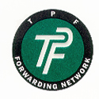

TPF
Forwarding
Network
900 Wilshire Blvd.
Suite #1434
Los Angeles, CA
90017
Tel: 213.627.0689
1.888.TPF-TRADE
Fax: 213.627.0398
Email:
TPF Central
TPF is a worldwide network of INDEPENDENT
freight forwarding firms organized to provide shippers with a better alternative. TPF
offers shippers the superior service of local firms operated by hands-on entrepreneurs
combined with the global reach of an international network.

Membership Benefits/Services
General Assembly Meetings
Every year, TPF convenes their General Assembly. Meetings are an opportunity to review the operations of the TPF organization, to discuss issues that impact the independent forwarder and global freight movement industry and to learn about global economic and trade trends. In addition, the meeting agenda includes speakers and industry representatives to speak on trade practices, customs regulations, economic trends and other insightful information specific to and around the host country.
TPF established three membership regions — The Americas, Europe/Africa and Australia/Asia. The General Assembly meeting sites rotate the regions of the world.
Membership Development
The Membership Work Group works to identify areas essential for TPF representation and build a global alliance of independent business contacts. In order to encourage involvement from members, TPF implemented two membership incentive programs.
Recruitment Incentive Program: A current TPF Members that successfully recruits a new TPF member will receive a credit to their TPF account. The credit amount for the recruiting member is calculated as 20% of the new member’s annual dues payment and entry fee. The amount is credited once the 2
nd six-month installment is received by TPF. Prospective members must submit an application and go through the standard review procedures including a credit check. The Board of Directors will review membership applications to determine acceptance or denial.Prospective Member Incentive: New members that join TPF prior to the years General Assembly Meeting and attend the Meeting qualify to receive a 50% discount on their entry fee.
Marketing/Public Relations
One of the main functions of the TPF office is to implement a central marketing and public relations program designed to raise awareness of the role of the independent freight forwarder in the global freight movement industry. The Association provides a menu of marketing materials for use by TPF members. Marketing pieces are designed for use in conjunction with the individual members’ marketing tools.
In addition, TPF is developing a public relations/press program to generate press coverage and position the TPF logo in public view. The long-term marketing/PR plan will include a broad international marketing program coupled with a regionally focussed program.
Information Tracking System
TPF joined forces with Shiptrax to offer an Internet-based shipment information tracking system to TPF Members. TPF Members can share information on shipments with other TPF partners through a central system. As well, customers given client access may check for details specific to their goods. To avoid double entry of data, information may be uploaded from a member company database through an EDI link into the Shiptrax system. Arrangements between TPF & Shiptrax brought to TPF Members and their customers an easy to use, cost effective, fully automated tracking system. TPF and Shiptrax work closely to evaluate and develop new capabilities for the system.
NVOCC/Bill of Lading
TPF has filed an NVOCC tariff with the United States Federal Maritime Commission and posted the required bond. TPF administers the tariff/rate filings; however, all accounting and profit share calculations are settled directly between the members involved in the specific traffic. TPF has an insured Bill of Lading available for use by qualified TPF members.
Contracts
TPF established a Contracts Work Group to create beneficial carrier contracts for TPF Members. The work group coordinates efforts to negotiate competitive contract rates and disseminates the information to TPF Members for their use.
ISO 9002
A number of TPF members have already achieved ISO certification and others are involved in the process. Members are encouraged to acquire ISO certification.